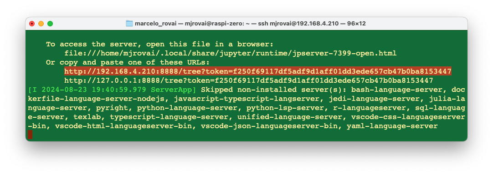
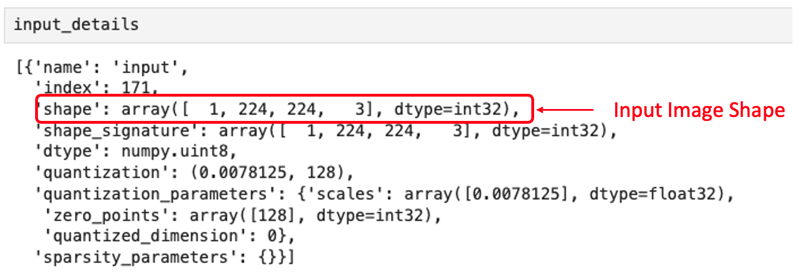
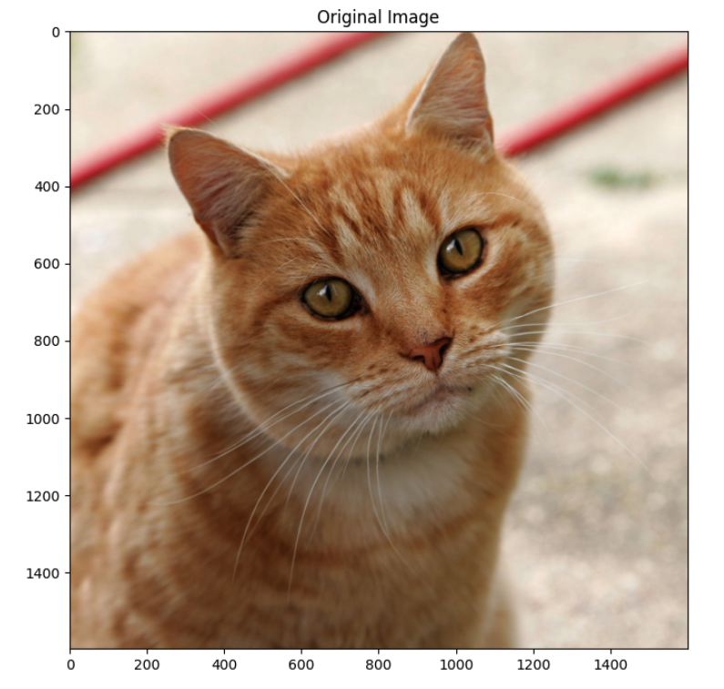
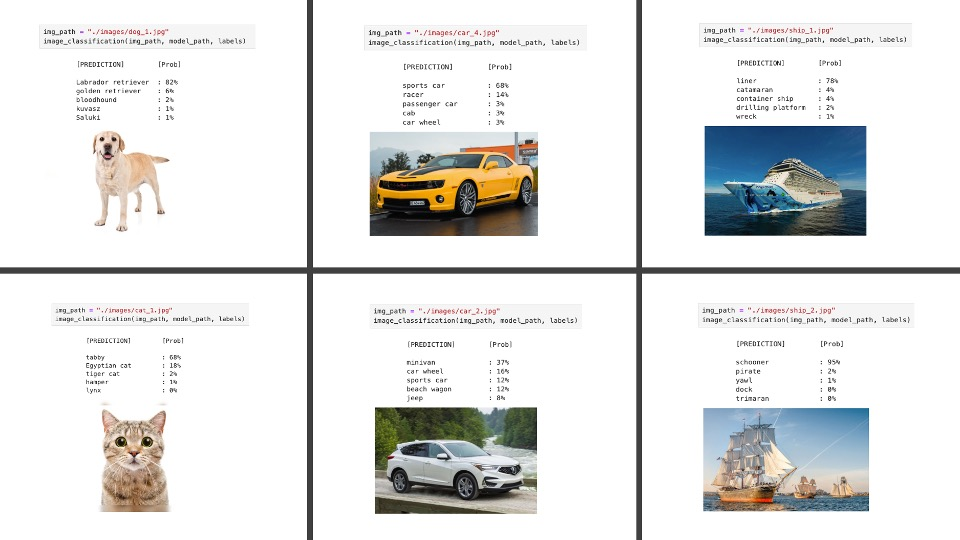
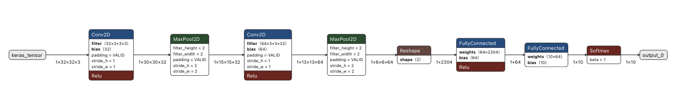
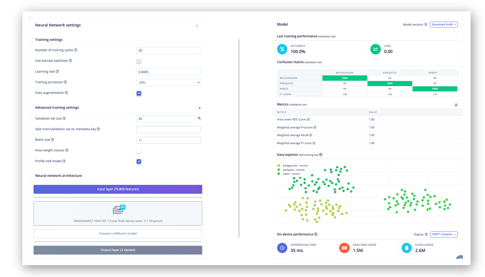
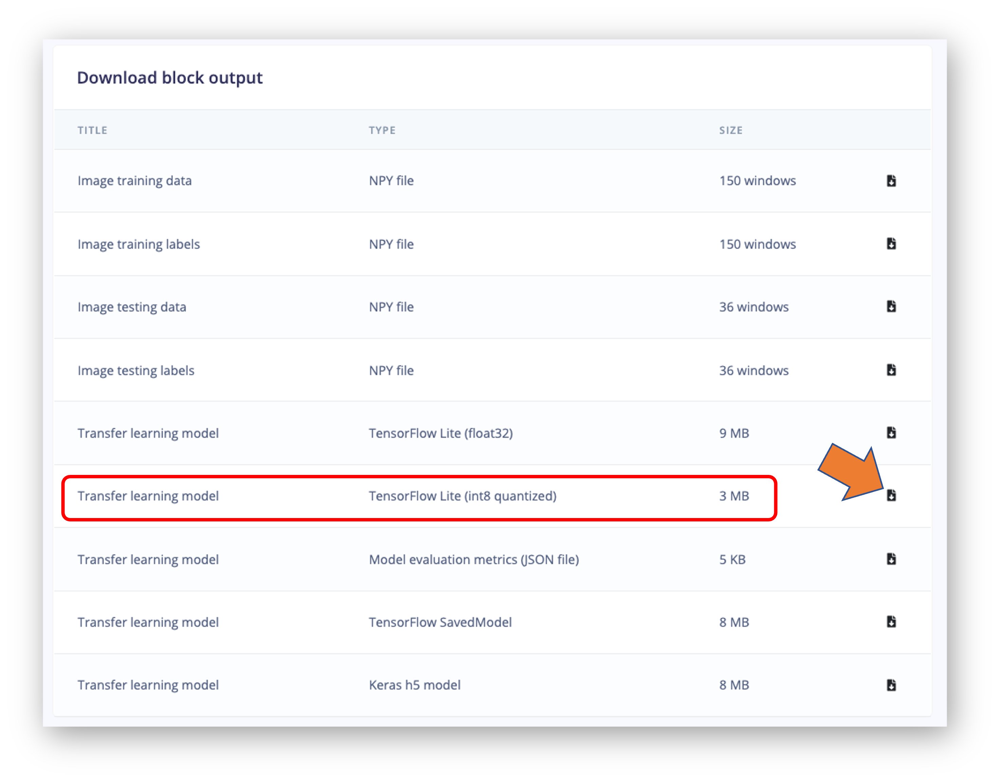

Classificazione delle Immagini

Introduzione
La classificazione delle immagini è un’attività fondamentale nella visione artificiale che comporta la categorizzazione di un’immagine in una delle diverse classi predefinite. È una pietra angolare dell’intelligenza artificiale, che consente alle macchine di interpretare e comprendere le informazioni visive in un modo che imita la percezione umana.
La classificazione delle immagini si riferisce all’assegnazione di un’etichetta o di una categoria a un’intera immagine in base al suo contenuto visivo. Questa attività è fondamentale nella visione artificiale e ha numerose applicazioni in vari settori. L’importanza della classificazione delle immagini risiede nella sua capacità di automatizzare le attività di comprensione visiva che altrimenti richiederebbero l’intervento umano.
Applicazioni in Scenari del Mondo Reale
La classificazione delle immagini ha trovato la sua strada in numerose applicazioni del mondo reale, rivoluzionando vari settori:
- Sanità: Assistenza nell’analisi delle immagini mediche, come l’identificazione di anomalie nelle radiografie o nelle risonanze magnetiche.
- Agricoltura: Monitoraggio della salute delle colture e rilevamento delle malattie delle piante tramite immagini aeree.
- Automotive: Abilitazione di sistemi avanzati di assistenza alla guida e veicoli autonomi per riconoscere segnali stradali, pedoni e altri veicoli.
- Vendita al Dettaglio: Potenziamento delle capacità di ricerca visiva e sistemi di gestione automatizzata dell’inventario.
- Sicurezza e Sorveglianza: Potenziamento dei sistemi di rilevamento delle minacce e riconoscimento facciale.
- Monitoraggio Ambientale: Analisi delle immagini satellitari per studi su deforestazione, pianificazione urbana e cambiamenti climatici.
Vantaggi dell’Esecuzione della Classificazione su Dispositivi Edge come Raspberry Pi
L’implementazione della classificazione delle immagini su dispositivi edge come Raspberry Pi offre diversi vantaggi interessanti:
Bassa latenza: L’elaborazione delle immagini in locale elimina la necessità di inviare dati ai server cloud, riducendo significativamente i tempi di risposta.
Funzionalità Offline: La classificazione può essere eseguita senza una connessione Internet, rendendola adatta ad ambienti remoti o con problemi di connettività.
Privacy e Sicurezza: I dati sensibili delle immagini rimangono sul dispositivo locale, affrontando i problemi di privacy dei dati e i requisiti di conformità.
Efficacia in Termini di Costi: Elimina la necessità di costose risorse di cloud computing, in particolare per attività di classificazione continue o ad alto volume.
Scalabilità: Consente architetture di elaborazione distribuite in cui più dispositivi possono funzionare in modo indipendente o in una rete.
Efficienza Energetica: I modelli ottimizzati su hardware dedicato possono essere più efficienti dal punto di vista energetico rispetto alle soluzioni basate su cloud, il che è fondamentale per applicazioni alimentate a batteria o remote.
Personalizzazione: L’implementazione di modelli specializzati o aggiornati di frequente, su misura per casi d’uso specifici, è più gestibile.
Possiamo creare soluzioni di visione artificiale più reattive, sicure ed efficienti sfruttando la potenza di dispositivi edge come Raspberry Pi per la classificazione delle immagini. Questo approccio apre nuove possibilità per integrare l’elaborazione visiva intelligente in varie applicazioni e ambienti.
Nelle sezioni seguenti, esploreremo come implementare e ottimizzare la classificazione delle immagini su Raspberry Pi, sfruttando questi vantaggi per creare sistemi di visione artificiale potenti ed efficienti.
Impostazione dell’Ambiente
Aggiornamento di Raspberry Pi
Innanzitutto, assicurarsi che il Raspberry Pi sia aggiornato:
sudo apt update
sudo apt upgrade -yInstallazione delle Librerie Richieste
Installare le librerie necessarie per l’elaborazione delle immagini e l’apprendimento automatico:
sudo apt install python3-pip
sudo rm /usr/lib/python3.11/EXTERNALLY-MANAGED
pip3 install --upgrade pipImpostazione di un Ambiente Virtuale (Facoltativo ma Consigliato)
Creare un ambiente virtuale per gestire le dipendenze:
python3 -m venv ~/tflite
source ~/tflite/bin/activateInstallazione di TensorFlow Lite
Siamo interessati a eseguire inferenza, ovvero l’esecuzione di un modello TensorFlow Lite su un dispositivo per effettuare previsioni basate sui dati di input. Per eseguire un’inferenza con un modello TensorFlow Lite, dobbiamo eseguirla tramite un interprete. L’interprete TensorFlow Lite è progettato per essere snello e veloce. L’interprete utilizza un ordinamento grafico statico e un allocatore di memoria personalizzato (meno dinamico) per garantire un carico, inizializzazione ed esecuzione latenza minimi.
Utilizzeremo il runtime TensorFlow Lite per Raspberry Pi, una libreria semplificata per l’esecuzione di modelli di apprendimento automatico su dispositivi mobili e embedded, senza includere tutti i pacchetti TensorFlow.
pip install tflite_runtime --no-depsLa wheel installata:
tflite_runtime-2.14.0-cp311-cp311-manylinux_2_34_aarch64.whl
Installazione di Librerie Python Aggiuntive
Installare le librerie Python richieste per l’uso con Image Classification:
Se è installata un’altra versione di Numpy, disinstallarla prima.
pip3 uninstall numpyInstallare la versione 1.23.2, che è compatibile con tflite_runtime.
pip3 install numpy==1.23.2pip3 install Pillow matplotlibCreazione di una directory di lavoro:
Se si lavora su Raspi-Zero con il sistema operativo minimo (No Desktop), non si ha un albero di directory user-pre-defined (lo si può verificare con ls. Quindi, creiamone uno:
mkdir Documents
cd Documents/
mkdir TFLITE
cd TFLITE/
mkdir IMG_CLASS
cd IMG_CLASS
mkdir models
cd modelsSu Raspi-5, /Documents dovrebbe esserci.
Ottenere un Modello di Classificazione delle Immagini Pre-addestrato:
Un modello pre-addestrato appropriato è fondamentale per una classificazione delle immagini di successo su dispositivi con risorse limitate come Raspberry Pi. MobileNet è progettato per applicazioni di visione mobile e embedded con un buon equilibrio tra accuratezza e velocità. Versioni: MobileNetV1, MobileNetV2, MobileNetV3. Scarichiamo la V2:
wget https://storage.googleapis.com/download.tensorflow.org/models/
tflite_11_05_08/mobilenet_v2_1.0_224_quant.tgz
tar xzf mobilenet_v2_1.0_224_quant.tgzPrelevarne le etichette:
wget https://raw.githubusercontent.com/tensorflow/tensorflow/master/tensorflow/
lite/java/demo/app/src/main/assets/labels_mobilenet_quant_v1_224.txt -O labels.txtAlla fine, si dovrebbero avere i modelli nella sua directory:
Ci serviranno solo il modello
mobilenet_v2_1.0_224_quant.tfliteelabels.txt. Si possono eliminare gli altri file.
Impostazione di Jupyter Notebook (Facoltativo)
Se si preferisce usare Jupyter Notebook per lo sviluppo:
pip3 install jupyter
jupyter notebook --generate-configPer eseguire Jupyter Notebook, si lancia il comando (cambiare l’indirizzo IP per il proprio):
jupyter notebook --ip=192.168.4.210 --no-browserSul terminale, si può vedere l’indirizzo URL locale per aprire il notebook:

Vi si può accedere da un altro dispositivo inserendo l’indirizzo IP del Raspberry Pi e il token fornito in un browser Web (il token lo si può copiare dal terminale).

Definire la directory di lavoro nel Raspi e creare un nuovo notebook Python 3.
Verifica della Configurazione
Testare la configurazione eseguendo un semplice script Python:
import tflite_runtime.interpreter as tflite
import numpy as np
from PIL import Image
print("NumPy:", np.__version__)
print("Pillow:", Image.__version__)
# Try to create a TFLite Interpreter
model_path = "./models/mobilenet_v2_1.0_224_quant.tflite"
interpreter = tflite.Interpreter(model_path=model_path)
interpreter.allocate_tensors()
print("TFLite Interpreter created successfully!")Si può creare lo script Python usando nano sul terminale, salvandolo con CTRL+0 + ENTER + CTRL+X

Ed eseguirlo col comando:

Oppure lo si può lanciare direttamente sul Notebook:
Fare inferenze con Mobilenet V2
Nell’ultima sezione, abbiamo impostato l’ambiente, incluso il download di un modello pre-addestrato popolare, Mobilenet V2, addestrato sulle immagini 224x224 di ImageNet (1,2 milioni) per 1.001 classi (1.000 categorie di oggetti più 1 sfondo). Il modello è stato convertito in un formato TensorFlow Lite compatto da 3,5 MB, rendendolo adatto allo spazio di archiviazione e alla memoria limitati di un Raspberry Pi.

Apriamo un nuovo notebook per seguire tutti i passaggi per classificare un’immagine:
Importare le librerie necessarie:
import time
import numpy as np
import matplotlib.pyplot as plt
from PIL import Image
import tflite_runtime.interpreter as tfliteCaricare il modello TFLite e allocare i tensori:
model_path = "./models/mobilenet_v2_1.0_224_quant.tflite"
interpreter = tflite.Interpreter(model_path=model_path)
interpreter.allocate_tensors()Ottenere i tensori di input e output.
input_details = interpreter.get_input_details()
output_details = interpreter.get_output_details()Input details ci daranno informazioni su come il modello dovrebbe essere alimentato con un’immagine. Il profilo di (1, 224, 224, 3) ci informa che un’immagine con dimensioni (224x224x3) dovrebbe essere inserita una alla volta (Batch Dimension: 1).

Gli output details mostrano che l’inferenza risulterà in un array di 1.001 valori interi. Tali valori derivano dalla classificazione dell’immagine, dove ogni valore è la probabilità che quella specifica etichetta sia correlata all’immagine.

Esaminiamo anche il dtype dei dettagli di input del modello
input_dtype = input_details[0]['dtype']
input_dtypedtype('uint8')Questo mostra che l’immagine di input dovrebbe essere composta da pixel grezzi (0 - 255).
Prendiamo un’immagine di prova. La si può trasferire dal computer o scaricarne una per testarla. Per prima cosa creiamo una cartella nella nostra directory di lavoro:
mkdir images
cd images
wget https://upload.wikimedia.org/wikipedia/commons/3/3a/Cat03.jpgCarichiamo e visualizziamo l’immagine:
# Load he image
img_path = "./images/Cat03.jpg"
img = Image.open(img_path)
# Display the image
plt.figure(figsize=(8, 8))
plt.imshow(img)
plt.title("Original Image")
plt.show()
Possiamo vedere la dimensione dell’immagine eseguendo il comando:
width, height = img.sizeQuesto ci mostra che l’immagine è RGB con una larghezza di 1600 e un’altezza di 1600 pixel. Quindi, per usare il nostro modello, dovremmo rimodellarlo in (224, 224, 3) e aggiungere una dimensione batch di 1, come definito nei dettagli di input: (1, 224, 224, 3). Il risultato dell’inferenza, come mostrato nei dettagli di output, sarà un array con una dimensione di 1001, come mostrato di seguito:

Quindi, rimodelliamo l’immagine, aggiungiamo la dimensione batch e vediamo il risultato:
img = img.resize((input_details[0]['shape'][1], input_details[0]['shape'][2]))
input_data = np.expand_dims(img, axis=0
input_data.shapeLa forma di input_data è come previsto: (1, 224, 224, 3)
Confermiamo il dtype dei dati di input:
input_data.dtypedtype('uint8')Il dtype dei dati di input è ‘uint8’, che è compatibile con il dtype previsto per il modello.
Utilizzando input_data, eseguiamo l’interprete e otteniamo le previsioni (output):
interpreter.set_tensor(input_details[0]['index'], input_data)
interpreter.invoke()
predictions = interpreter.get_tensor(output_details[0]['index'])[0]La previsione è un array con 1001 elementi. Otteniamo i primi 5 indici in cui i loro elementi hanno valori elevati:
top_k_results = 5
top_k_indices = np.argsort(predictions)[::-1][:top_k_results]
top_k_indicestop_k_indices è un array con 5 elementi: array([283, 286, 282])
Quindi, 283, 286, 282, 288 e 479 sono le classi più probabili dell’immagine. Avendo l’indice, dobbiamo trovare a quale classe è assegnato (ad esempio auto, gatto o cane). Il file di testo scaricato con il modello ha un’etichetta associata a ciascun indice da 0 a 1.000. Usiamo una funzione per caricare il file .txt come un elenco:
def load_labels(filename):
with open(filename, 'r') as f:
return [line.strip() for line in f.readlines()]E otteniamo l’elenco, stampando le etichette associate agli indici:
labels_path = "./models/labels.txt"
labels = load_labels(labels_path)
print(labels[286])
print(labels[283])
print(labels[282])
print(labels[288])
print(labels[479])Di conseguenza abbiamo:
Egyptian cat
tiger cat
tabby
lynx
cartonAlmeno i quattro indici principali sono correlati ai felini. Il contenuto di prediction è la probabilità associata a ciascuna delle etichette. Come abbiamo visto nei dettagli dell’output, quei valori sono quantizzati e dovrebbero essere dequantizzati e applicare la softmax.
scale, zero_point = output_details[0]['quantization']
dequantized_output = (predictions.astype(np.float32) - zero_point) * scale
exp_output = np.exp(dequantized_output - np.max(dequantized_output))
probabilities = exp_output / np.sum(exp_output)Stampiamo le prime 5 probabilità:
print (probabilities[286])
print (probabilities[283])
print (probabilities[282])
print (probabilities[288])
print (probabilities[479])0.27741462
0.3732285
0.16919471
0.10319158
0.023410844Per chiarezza, creiamo una funzione per mettere in relazione le etichette con le probabilità:
for i in range(top_k_results):
print("\t{:20}: {}%".format(
labels[top_k_indices[i]],
(int(probabilities[top_k_indices[i]]*100))))tiger cat : 37%
Egyptian cat : 27%
tabby : 16%
lynx : 10%
carton : 2%Definire una funzione generale di Classificazione delle Immagini
Creiamo una funzione generale per dare un’immagine come input e otteniamo le prime 5 classi possibili:def image_classification(img_path, model_path, labels, top_k_results=5):
# load the image
img = Image.open(img_path)
plt.figure(figsize=(4, 4))
plt.imshow(img)
plt.axis('off')
# Load the TFLite model
interpreter = tflite.Interpreter(model_path=model_path)
interpreter.allocate_tensors()
# Get input and output tensors
input_details = interpreter.get_input_details()
output_details = interpreter.get_output_details()
# Preprocess
img = img.resize((input_details[0]['shape'][1],
input_details[0]['shape'][2]))
input_data = np.expand_dims(img, axis=0)
# Inference on Raspi-Zero
interpreter.set_tensor(input_details[0]['index'], input_data)
interpreter.invoke()
# Obtain results and map them to the classes
predictions = interpreter.get_tensor(output_details[0]['index'])[0]
# Get indices of the top k results
top_k_indices = np.argsort(predictions)[::-1][:top_k_results]
# Get quantization parameters
scale, zero_point = output_details[0]['quantization']
# Dequantize the output and apply softmax
dequantized_output = (predictions.astype(np.float32) - zero_point) * scale
exp_output = np.exp(dequantized_output - np.max(dequantized_output))
probabilities = exp_output / np.sum(exp_output)
print("\n\t[PREDICTION] [Prob]\n")
for i in range(top_k_results):
print("\t{:20}: {}%".format(
labels[top_k_indices[i]],
(int(probabilities[top_k_indices[i]]*100))))E caricando alcune immagini per i test, abbiamo:

Test con un modello addestrato da zero
Addestriamo un modello TFLite da zero. Per questo, si può seguire il Notebook:
CNN to classify Cifar-10 dataset
Nel notebook, abbiamo addestrato un modello utilizzando il dataset CIFAR10, che contiene 60.000 immagini da 10 classi di CIFAR (airplane, automobile, bird, cat, deer, dog, frog, horse, ship, and truck). CIFAR ha immagini a colori 32x32 (3 canali colore) in cui gli oggetti non sono centrati e possono avere l’oggetto con uno sfondo, come gli aerei che potrebbero avere un cielo nuvoloso dietro di loro! In breve, immagini piccole ma reali.
Il modello addestrato dalla CNN (cifar10_model.keras) aveva una dimensione di 2,0 MB. Utilizzando TFLite Converter, il modello cifar10.tflite è diventato di 674 MB (circa 1/3 della dimensione originale).

Sul notebook Cifar 10 - Image Classification on a Raspi with TFLite (che può essere eseguito sul Raspi), possiamo seguire gli stessi passaggi che abbiamo fatto con mobilenet_v2_1.0_224_quant.tflite. Di seguito sono riportati esempi di immagini che utilizzano la General Function for Image Classification su un Raspi-Zero, come mostrato nell’ultima sezione.
Installing Picamera2
Picamera2, una libreria Python per interagire con la fotocamera del Raspberry Pi, è basata sullo stack della fotocamera libcamera e la Raspberry Pi Foundation la mantiene. La libreria Picamera2 è supportata su tutti i modelli Raspberry Pi, dal Pi Zero al RPi 5. È già installata in tutto il sistema Raspi, ma dovremmo renderla accessibile all’interno dell’ambiente virtuale.
Per prima cosa, attivare l’ambiente virtuale se non è già attivato:
source ~/tflite/bin/activateOra, creiamo un file .pth nelll’ambiente virtuale per aggiungere il percorso del sistema del pacchetto sul sito:
echo "/usr/lib/python3/dist-packages" > $VIRTUAL_ENV/lib/python3.11/ site-packages/system_site_packages.pthNota: se la versione di Python è diversa, sostituire
python3.11con la versione appropriata.Dopo aver creato questo file, provare a importare picamera2 in Python:
python3 >>> import picamera2 >>> print(picamera2.__file__)
Il codice sopra mostrerà la posizione del file del modulo picamera2 stesso, dimostrando che la libreria è accessibile dall’ambiente.
/home/mjrovai/tflite/lib/python3.11/site-packages/picamera2/__init__.pyÈ anche possibile elencare le telecamere disponibili nel sistema:
>>> print(Picamera2.global_camera_info())Nel nostro caso, con una USB installata, si è ottenuto:

Ora che abbiamo confermato che picamera2 funziona nell’ambiente con un indice 0, proviamo un semplice script Python per catturare un’immagine dalla fotocamera USB:
from picamera2 import Picamera2
import time
# Initialize the camera
picam2 = Picamera2() # default is index 0
# Configure the camera
config = picam2.create_still_configuration(main={"size": (640, 480)})
picam2.configure(config)
# Start the camera
picam2.start()
# Wait for the camera to warm up
time.sleep(2)
# Capture an image
picam2.capture_file("usb_camera_image.jpg")
print("Image captured and saved as 'usb_camera_image.jpg'")
# Stop the camera
picam2.stop()Utilizzare l’editor di testo Nano, Jupyter Notebook o qualsiasi altro editor. Salvarlo come script Python (ad esempio, capture_image.py) ed eseguilo. Questo dovrebbe catturare un’immagine dalla fotocamera e salvarla come “usb_camera_image.jpg” nella stessa directory dello script.
Se Jupyter è aperto, si può vedere l’immagine catturata sul computer. Altrimenti, si trasferisce il file dal Raspi al computer.
Se si sta lavorando con un Raspi-5 con un intero desktop, si può aprire il file direttamente sul dispositivo.
Progetto di Classificazione delle Immagini
Ora, svilupperemo un progetto completo di Classificazione delle Immagini utilizzando Edge Impulse Studio. Come abbiamo fatto con Movilinet V2, il modello TFLite addestrato e convertito verrà utilizzato per l’inferenza.
L’Obiettivo
Il primo passo in qualsiasi progetto ML è definire il suo obiettivo. In questo caso, è rilevare e classificare due oggetti specifici presenti in un’immagine. Per questo progetto, utilizzeremo due piccoli giocattoli: un robot e un piccolo pappagallo brasiliano (chiamato Periquito). Raccoglieremo anche immagini di un background in cui questi due oggetti sono assenti.

Raccolta Dati
Una volta definito l’obiettivo del nostro progetto di apprendimento automatico, il passaggio successivo, e più cruciale, è la raccolta del dataset. Possiamo utilizzare un telefono per l’acquisizione delle immagini, ma qui utilizzeremo il Raspi. Impostiamo un semplice server Web sul nostro Raspberry Pi per visualizzare le immagini QVGA (320 x 240) acquisite in un browser.
Per prima cosa, installiamo Flask, un framework Web leggero per Python:
pip3 install flaskCreiamo un nuovo script Python che combina l’acquisizione delle immagini con un server Web. Lo chiameremo
get_img_data.py:
from flask import Flask, Response, render_template_string, request, redirect, url_for
from picamera2 import Picamera2
import io
import threading
import time
import os
import signal
app = Flask(__name__)
# Global variables
base_dir = "dataset"
picam2 = None
frame = None
frame_lock = threading.Lock()
capture_counts = {}
current_label = None
shutdown_event = threading.Event()
def initialize_camera():
global picam2
picam2 = Picamera2()
config = picam2.create_preview_configuration(main={"size": (320, 240)})
picam2.configure(config)
picam2.start()
time.sleep(2) # Wait for camera to warm up
def get_frame():
global frame
while not shutdown_event.is_set():
stream = io.BytesIO()
picam2.capture_file(stream, format='jpeg')
with frame_lock:
frame = stream.getvalue()
time.sleep(0.1) # Adjust as needed for smooth preview
def generate_frames():
while not shutdown_event.is_set():
with frame_lock:
if frame is not None:
yield (b'--frame\r\n'
b'Content-Type: image/jpeg\r\n\r\n' + frame + b'\r\n')
time.sleep(0.1) # Adjust as needed for smooth streaming
def shutdown_server():
shutdown_event.set()
if picam2:
picam2.stop()
# Give some time for other threads to finish
time.sleep(2)
# Send SIGINT to the main process
os.kill(os.getpid(), signal.SIGINT)
@app.route('/', methods=['GET', 'POST'])
def index():
global current_label
if request.method == 'POST':
current_label = request.form['label']
if current_label not in capture_counts:
capture_counts[current_label] = 0
os.makedirs(os.path.join(base_dir, current_label), exist_ok=True)
return redirect(url_for('capture_page'))
return render_template_string('''<!DOCTYPE html>
<html>
<head><meta http-equiv="Content-Type" content="text/html; charset=UTF-8">
<title>Dataset Capture - Label Entry</title>
</head>
<body>
<h1>Enter Label for Dataset</h1>
<form method="post"><input type="text" name="label" required>
<input type="submit" value="Start Capture"></form>
</body>
</html>''')
@app.route('/capture')
def capture_page():
return render_template_string('''<!DOCTYPE html>
<html>
<head><meta http-equiv="Content-Type" content="text/html; charset=UTF-8">
<title>Dataset Capture</title>
<script>var shutdownInitiated = false;
function checkShutdown() {
if (!shutdownInitiated) {
fetch('/check_shutdown')
.then(response => response.json())
.then(data => {
if (data.shutdown) {
shutdownInitiated = true;
document.getElementById('video-feed').src = '';
document.getElementById('shutdown-message')
.style.display = 'block';
}
});
}
}
setInterval(checkShutdown, 1000); // Check every second</script>
</head>
<body>
<h1>Dataset Capture</h1>
<p>Current Label: {{ label }}</p>
<p>Images captured for this label: {{ capture_count }}</p>
<img id="video-feed" src="{{ url_for('video_feed') }}" width="640"
height="480" /><div id="shutdown-message" style="display: none; color: red;">Capture process has been stopped. You can close this window.</div>
<form action="/capture_image" method="post"><input type="submit" value="Capture Image"></form>
<form action="/stop" method="post"><input type="submit" value="Stop Capture"
style="background-color: #ff6666;"></form>
<form action="/" method="get"><input type="submit" value="Change Label"
style="background-color: #ffff66;"></form>
</body>
</html>''', label=current_label, capture_count=capture_counts.get(current_label, 0))
@app.route('/video_feed')
def video_feed():
return Response(generate_frames(),
mimetype='multipart/x-mixed-replace; boundary=frame')
@app.route('/capture_image', methods=['POST'])
def capture_image():
global capture_counts
if current_label and not shutdown_event.is_set():
capture_counts[current_label] += 1
timestamp = time.strftime("%Y%m%d-%H%M%S")
filename = f"image_{timestamp}.jpg"
full_path = os.path.join(base_dir, current_label, filename)
picam2.capture_file(full_path)
return redirect(url_for('capture_page'))
@app.route('/stop', methods=['POST'])
def stop():
summary = render_template_string('''<!DOCTYPE html>
<html>
<head><meta http-equiv="Content-Type" content="text/html; charset=UTF-8">
<title>Dataset Capture - Stopped</title>
</head>
<body>
<h1>Dataset Capture Stopped</h1>
<p>The capture process has been stopped. You can close this window.</p>
<p>Summary of captures:</p>
<ul>{% for label, count in capture_counts.items() %}<li>{{ label }}: {{ count }} images</li>{% endfor %}</ul>
</body>
</html>''', capture_counts=capture_counts)
# Start a new thread to shutdown the server
threading.Thread(target=shutdown_server).start()
return summary
@app.route('/check_shutdown')
def check_shutdown():
return {'shutdown': shutdown_event.is_set()}
if __name__ == '__main__':
initialize_camera()
threading.Thread(target=get_frame, daemon=True).start()
app.run(host='0.0.0.0', port=5000, threaded=True)Eseguire questo script:
python3 get_img_data.pyAccedere all’interfaccia web:
- Sul Raspberry Pi stesso (se si ha una GUI): Aprire un browser web e andare su
http://localhost:5000 - Da un altro dispositivo sulla stessa rete: Aprire un browser web e andare su
http://<raspberry_pi_ip>:5000(Sostituire<raspberry_pi_ip>con l’indirizzo IP del Raspberry Pi). Per esempio:http://192.168.4.210:5000/
- Sul Raspberry Pi stesso (se si ha una GUI): Aprire un browser web e andare su
Questo script Python crea un’interfaccia basata sul web per catturare e organizzare set di dati di immagini usando un Raspberry Pi e la sua fotocamera. È utile per progetti di apprendimento automatico che richiedono dati di immagini etichettati.
Caratteristiche Principali:
- *Interfaccia Web**: Accessibile da qualsiasi dispositivo sulla stessa rete del Raspberry Pi.
- Anteprima Telecamera in Tempo Reale: Mostra un feed in tempo reale dalla telecamera.
- *Sistema di Etichettatura**: Consente agli utenti di immettere etichette per diverse categorie di immagini.
- *Archiviazione Organizzata**: Salva automaticamente le immagini in sottodirectory specifiche per etichetta..
- Contatori per Etichetta: Tiene traccia di quante immagini vengono acquisite per ogni etichetta.
- *Statistiche di Riepilogo**: Fornisce un riepilogo delle immagini acquisite quando si interrompe il processo di acquisizione.
Componenti Principali:
- *Applicazione Web Flask**: Gestisce il routing e serve l’interfaccia Web.
- Integrazione di Picamera2: Controlla la telecamera Raspberry Pi.
- Threaded Frame Capture: Assicura un’anteprima live fluida.
- File Management: Organizza le immagini catturate in directory etichettate.
Funzioni Chiave:
initialize_camera(): Imposta l’istanza Picamera2.get_frame(): Cattura continuamente i frame per l’anteprima live.generate_frames(): Genera i frame per il feed video live.shutdown_server(): Imposta l’evento di arresto, arresta la telecamera e arresta il server Flaskindex(): Gestisce la pagina di input dell’etichetta.capture_page(): Visualizza l’interfaccia di acquisizione principale.video_feed(): Mostra un’anteprima live per posizionare la telecameracapture_image(): Salva un’immagine con l’etichetta corrente.stop(): Arresta il processo di acquisizione e visualizza un riepilogo.
Flusso di Utilizzo:
- Avviare lo script sul Raspberry Pi.
- Accedere all’interfaccia web da un browser.
- Inserire un’etichetta per le immagini da catturare e premere
Start Capture.

- Utilizzare l’anteprima live per posizionare la telecamera.
- Cliccare
Capture Imageper salvare le immagini sotto l’etichetta corrente.

- Cambiare le etichette come necessario per le diverse categorie, selezionando
Change Label. - Cliccare
Stop Captureal termine per vedere un riepilogo.

Note Tecniche:
- Lo script usa il threading per gestire la cattura di frame e il web serving simultanei.
- Le immagini vengono salvate con timestamp nei nomi dei file per renderle uniche.
- L’interfaccia web è reattiva e accessibile da dispositivi mobili.
Possibilità di Personalizzazione:
- Regolare la risoluzione dell’immagine nella funzione
initialize_camera(). Qui abbiamo utilizzato QVGA (320X240). - Modificare i modelli HTML per un aspetto diverso.
- Aggiungere ulteriori passaggi di elaborazione o analisi delle immagini nella funzione
capture_image().
Numero di campioni sul Dataset:
Si ottengono circa 60 immagini da ciascuna categoria (periquito, robot e background). Provare ad acquisire con diverse angolazioni, sfondi e condizioni di luce. Sul Raspi, finiremo con una cartella denominata dataset, che contiene 3 sottocartelle periquito, robot e background. una per ogni classe di immagini.
Si può usare Filezilla per trasferire il dataset creato sul computer principale.
Addestramento del modello con Edge Impulse
Useremo Edge Impulse Studio per addestrare il modello. Si va nella Pagina di Edge Impulse, si inseriscono le credenziali e si crea un nuovo progetto:

Qui si può clonare un progetto simile: Raspi - Img Class.
Dataset
Esamineremo quattro passaggi principali usando EI Studio (o Studio). Questi passaggi sono fondamentali per preparare il nostro modello per l’uso sul Raspi: Dataset, Impulse, Test e Deploy (sul dispositivo Edge, in questo caso, il Raspi).
Per quanto riguarda il Dataset, è essenziale sottolineare che il nostro Dataset originale, acquisito con il Raspi, sarà suddiviso in Training, Validation e Test. Il Test Set sarà separato dall’inizio e riservato per l’uso solo nella fase di Test dopo l’addestramento. Il Validation Set sarà utilizzato durante l’addestramento.
Su Studio, seguire i passaggi per caricare i dati acquisiti:
- Si va nella scheda
Data acquisitione nella sezioneUPLOAD DATA, si caricano i file dal computer nelle categorie scelte. - Lasciare a Studio la suddivisione del dataset originale in train and test e scegliere l’etichetta a riguardo
- Ripetere la procedura per tutte e tre le classi. Alla fine, si vedranno i “raw data” in Studio:

Studio consente di esplorare i dati, mostrando una vista completa di tutti i quelli nel progetto. Si possono cancellare, ispezionare o modificare le etichette cliccando sui singoli elementi di dati. Nel nostro caso, un progetto semplice, i dati sembrano OK.

Il Progetto Impulse
In questa fase, dovremmo definire come:
Pre-elaborare i nostri dati, il che consiste nel ridimensionare le singole immagini e determinare la
color depth[profondità di colore] da utilizzare (sia RGB che in scala di grigi) eSpecificare un Modello. In questo caso, sarà
Transfer Learning (Images)a mettere a punto un modello di classificazione delle immagini MobileNet V2 pre-addestrato sui nostri dati. Questo metodo funziona bene anche con set di dati di immagini relativamente piccoli (circa 180 immagini nel nostro caso).
Transfer Learning con MobileNet offre un approccio semplificato all’addestramento del modello, che è particolarmente utile per ambienti con risorse limitate e progetti con dati etichettati limitati. MobileNet, noto per la sua architettura leggera, è un modello pre-addestrato che ha già appreso funzionalità preziose da un ampio set di dati (ImageNet).

Sfruttando queste funzionalità apprese, possiamo addestrare un nuovo modello per il compito specifico con meno dati e risorse computazionali e raggiungere un’accuratezza competitiva.

Questo approccio riduce significativamente i tempi di addestramento e i costi computazionali, rendendolo ideale per la prototipazione rapida e l’implementazione su dispositivi embedded in cui l’efficienza è fondamentale.
Si va alla scheda Impulse Design e si crea l’impulse, definendo una dimensione dell’immagine di 160x160 e schiacciandola (forma quadrata, senza ritaglio). Si seleziona Image e i blocchi Transfer Learning. Si salva l’Impulse.

Pre-elaborazione delle immagini
Tutte le immagini QVGA/RGB565 in ingresso verranno convertite in 76.800 feature (160x160x3).

Premere Save parameters e selezionare Generate features nella scheda successiva.
Progettazione del modello
MobileNet è una famiglia di reti neurali convoluzionali efficienti progettate per applicazioni di visione mobile e embedded. Le caratteristiche principali di MobileNet sono:
- Leggero: Ottimizzato per dispositivi mobili e sistemi embedded con risorse di calcolo limitate.
- Velocità: Tempi di inferenza rapidi, adatti per applicazioni in tempo reale.
- Precisione: Mantiene una buona accuratezza nonostante le dimensioni compatte.
MobileNetV2, introdotto nel 2018, migliora l’architettura MobileNet originale. Le caratteristiche principali includono:
- Residui Invertiti: Le strutture residue invertite vengono utilizzate quando vengono create connessioni di scelta rapida tra layer di colli di bottiglia sottili.
- Colli di Bottiglia Lineari: Rimuove le non linearità nei layer stretti per impedire la distruzione delle informazioni.
- Convoluzioni Separabili in Profondità: Continua a utilizzare questa efficiente operazione da MobileNetV1.
Nel nostro progetto, faremo un Transfer Learning con MobileNetV2 160x160 1.0, il che significa che le immagini utilizzate per l’addestramento (e l’inferenza futura) dovrebbero avere una input Size [dimensione di input] di 160x160 pixel e un Width Multiplier [moltiplicatore di larghezza] di 1.0 (larghezza completa, non ridotta). Questa configurazione bilancia tra dimensione del modello, velocità e accuratezza.
Training del Modello
Un’altra preziosa tecnica di apprendimento profondo è il Data Augmentation. Il “data augmentation” migliora l’accuratezza dei modelli di apprendimento automatico creando dati artificiali aggiuntivi. Un sistema di data augmentation apporta piccole modifiche casuali ai dati di training durante l’addestramento (ad esempio capovolgendo, ritagliando o ruotando le immagini).
Guardando internamente, qui si può vedere come Edge Impulse implementa una policy di data Augmentation sui dati:
# Implements the data augmentation policy
def augment_image(image, label):
# Flips the image randomly
image = tf.image.random_flip_left_right(image)
# Increase the image size, then randomly crop it down to
# the original dimensions
resize_factor = random.uniform(1, 1.2)
new_height = math.floor(resize_factor * INPUT_SHAPE[0])
new_width = math.floor(resize_factor * INPUT_SHAPE[1])
image = tf.image.resize_with_crop_or_pad(image, new_height, new_width)
image = tf.image.random_crop(image, size=INPUT_SHAPE)
# Vary the brightness of the image
image = tf.image.random_brightness(image, max_delta=0.2)
return image, labelL’esposizione a queste variazioni durante l’addestramento può aiutare a impedire al modello di prendere scorciatoie “memorizzando” indizi superficiali nei dati di addestramento, il che significa che potrebbe riflettere meglio i pattern profondi in esame nel set di dati.
L’ultimo layer denso del nostro modello avrà 0 neuroni con un dropout del 10% per prevenire il sovradattamento. Ecco il risultato del Training:

Il risultato è eccellente, con una latenza ragionevole di 35 ms (per un Raspi-4), che dovrebbe tradursi in circa 30 fps (fotogrammi al secondo) durante l’inferenza. Un Raspi-Zero dovrebbe essere più lento e il Raspi-5 più veloce.
Compromesso: Accuratezza contro Velocità
Se è necessaria un’inferenza più rapida, dovremmo addestrare il modello usando alfa più piccoli (0.35, 0.5 e 0.75) o persino ridurre le dimensioni dell’immagine in ingresso, a discapito dell’accuratezza. Tuttavia, ridurre le dimensioni dell’immagine in ingresso e diminuire l’alfa (moltiplicatore di larghezza) può accelerare l’inferenza per MobileNet V2, ma hanno compromessi diversi. Confrontiamoli:
- Riduzione delle Dimensioni dell’Immagine in Ingresso:
Pro:
- Riduce significativamente il costo computazionale su tutti i layer.
- Riduce l’utilizzo della memoria.
- Spesso fornisce un aumento sostanziale della velocità.
Contro:
- Potrebbe ridurre la capacità del modello di rilevare piccole caratteristiche o dettagli fini.
- Può avere un impatto significativo sulla precisione, specialmente per le attività che richiedono un riconoscimento a grana fine.
- Riduzione di Alpha (Moltiplicatore di Larghezza):
Pro:
- Riduce il numero di parametri e calcoli nel modello.
- Mantiene la risoluzione di input originale, preservando potenzialmente più dettagli.
- Può fornire un buon equilibrio tra velocità e precisione.
Contro:
- Potrebbe non accelerare l’inferenza in modo così drastico come la riduzione delle dimensioni di input.
- Può ridurre la capacità del modello di apprendere caratteristiche complesse.
Confronto:
- Impatto sulla Velocità:
- La riduzione delle dimensioni di input spesso fornisce un aumento di velocità più sostanziale perché riduce i calcoli in modo quadratico (dimezzando sia la larghezza che l’altezza si riducono i calcoli di circa il 75%).
- La riduzione di Alpha fornisce una riduzione più lineare nei calcoli.
- Impatto sulla Precisione:
- La riduzione delle dimensioni di input può avere un impatto significativo sulla precisione, specialmente quando si rilevano piccoli oggetti o dettagli fini.
- La riduzione di alpha tende ad avere un impatto più graduale sulla precisione.
- Architettura del Modello:
- La modifica delle dimensioni di input non altera l’architettura del modello.
- La modifica di alpha modifica la struttura del modello riducendo il numero di canali in ogni layer.
Raccomandazione:
- Se l’applicazione non richiede il rilevamento di piccoli dettagli e può tollerare una certa perdita di accuratezza, ridurre le dimensioni di input è spesso il modo più efficace per accelerare l’inferenza.
- Ridurre l’alfa potrebbe essere preferibile se mantenere la capacità di rilevare dettagli fini è fondamentale o se c’è bisogno di un compromesso più equilibrato tra velocità e accuratezza.
- Per ottenere risultati migliori, si devono sperimentare entrambi:
- Provare MobileNet V2 con dimensioni di input come 160x160 o 92x92
- Sperimentare con valori alfa come 1.0, 0.75, 0.5 o 0.35.
- Eseguire sempre il benchmark delle diverse configurazioni sull’hardware specifico e con il particolare set di dati per trovare l’equilibrio ottimale per il caso d’uso.
Ricordarsi che la scelta migliore dipende dai requisiti specifici di accuratezza, velocità e dalla natura delle immagini con cui si sta lavorando. Spesso vale la pena sperimentare combinazioni per trovare la configurazione ottimale per il particolare caso d’uso.
Test del Modello
Ora, si deve prendere il set di dati all’inizio del progetto ed eseguire il modello addestrato usandolo come input. Di nuovo, il risultato è eccellente (92,22%).
Distribuzione del modello
Come abbiamo fatto nella sezione precedente, possiamo distribuire il modello addestrato come .tflite e usare Raspi per eseguirlo usando Python.
Nella scheda Dashboard, si va su Transfer learning model (int8 quantized) e si clicca sull’icona di download:

Scarichiamo anche la versione float32 per il confronto
Trasferire il modello dal computer al Raspi (./models), ad esempio, usando FileZilla. Catturare, inoltre, alcune immagini per l’inferenza (./images).
Importare le librerie necessarie:
import time
import numpy as np
import matplotlib.pyplot as plt
from PIL import Image
import tflite_runtime.interpreter as tfliteDefinire i path e le etichette:
img_path = "./images/robot.jpg"
model_path = "./models/ei-raspi-img-class-int8-quantized-model.tflite"
labels = ['background', 'periquito', 'robot']Notare che i modelli addestrati su Edge Impulse Studio produrranno valori con indice 0, 1, 2, ecc., dove le etichette effettive seguiranno un ordine alfabetico.
Caricare il modello, allocare i tensori e ottenere i dettagli dei tensori di input e output:
# Load the TFLite model
interpreter = tflite.Interpreter(model_path=model_path)
interpreter.allocate_tensors()
# Get input and output tensors
input_details = interpreter.get_input_details()
output_details = interpreter.get_output_details()Una differenza importante da notare è che il dtype dei dettagli di input del modello è ora int8, il che significa che i valori di input vanno da -128 a +127, mentre ogni pixel della nostra immagine va da 0 a 255. Ciò significa che dovremmo pre-elaborare l’immagine per farla corrispondere. Possiamo controllare qui:
input_dtype = input_details[0]['dtype']
input_dtypenumpy.int8Quindi, apriamo l’immagine e mostriamola:
img = Image.open(img_path)
plt.figure(figsize=(4, 4))
plt.imshow(img)
plt.axis('off')
plt.show()
Ed eseguiamo la pre-elaborazione:
scale, zero_point = input_details[0]['quantization']
img = img.resize((input_details[0]['shape'][1],
input_details[0]['shape'][2]))
img_array = np.array(img, dtype=np.float32) / 255.0
img_array = (img_array / scale + zero_point).clip(-128, 127).astype(np.int8)
input_data = np.expand_dims(img_array, axis=0)Controllando i dati di input, possiamo verificare che il tensore di input è compatibile con quanto previsto dal modello:
input_data.shape, input_data.dtype((1, 160, 160, 3), dtype('int8'))Adesso è il momento di effettuare l’inferenza. Calcoliamo anche la latenza del modello:
# Inference on Raspi-Zero
start_time = time.time()
interpreter.set_tensor(input_details[0]['index'], input_data)
interpreter.invoke()
end_time = time.time()
inference_time = (end_time - start_time) * 1000 # Convert to milliseconds
print ("Inference time: {:.1f}ms".format(inference_time))Il modello impiegherà circa 125 ms per eseguire l’inferenza nel Raspi-Zero, che dura 3 o 4 volte più a lungo di un Raspi-5.
Ora possiamo ottenere le etichette di output e le probabilità. È anche importante notare che il modello addestrato su Edge Impulse Studio ha un softmax nel suo output (diverso dal Movilenet V2 originale) e dovremmo usare l’output grezzo del modello come “probabilità”.
# Obtain results and map them to the classes
predictions = interpreter.get_tensor(output_details[0]['index'])[0]
# Get indices of the top k results
top_k_results=3
top_k_indices = np.argsort(predictions)[::-1][:top_k_results]
# Get quantization parameters
scale, zero_point = output_details[0]['quantization']
# Dequantize the output
dequantized_output = (predictions.astype(np.float32) - zero_point) * scale
probabilities = dequantized_output
print("\n\t[PREDICTION] [Prob]\n")
for i in range(top_k_results):
print("\t{:20}: {:.2f}%".format(
labels[top_k_indices[i]],
probabilities[top_k_indices[i]] * 100))
Modifichiamo la funzione creata in precedenza in modo da poter gestire diversi tipi di modelli:
def image_classification(img_path, model_path, labels, top_k_results=3,
apply_softmax=False):
# Load the image
img = Image.open(img_path)
plt.figure(figsize=(4, 4))
plt.imshow(img)
plt.axis('off')
# Load the TFLite model
interpreter = tflite.Interpreter(model_path=model_path)
interpreter.allocate_tensors()
# Get input and output tensors
input_details = interpreter.get_input_details()
output_details = interpreter.get_output_details()
# Preprocess
img = img.resize((input_details[0]['shape'][1],
input_details[0]['shape'][2]))
input_dtype = input_details[0]['dtype']
if input_dtype == np.uint8:
input_data = np.expand_dims(np.array(img), axis=0)
elif input_dtype == np.int8:
scale, zero_point = input_details[0]['quantization']
img_array = np.array(img, dtype=np.float32) / 255.0
img_array = (img_array / scale + zero_point).clip(-128, 127).astype(np.int8)
input_data = np.expand_dims(img_array, axis=0)
else: # float32
input_data = np.expand_dims(np.array(img, dtype=np.float32), axis=0) / 255.0
# Inference on Raspi-Zero
start_time = time.time()
interpreter.set_tensor(input_details[0]['index'], input_data)
interpreter.invoke()
end_time = time.time()
inference_time = (end_time - start_time) * 1000 # Convert to milliseconds
# Obtain results
predictions = interpreter.get_tensor(output_details[0]['index'])[0]
# Get indices of the top k results
top_k_indices = np.argsort(predictions)[::-1][:top_k_results]
# Handle output based on type
output_dtype = output_details[0]['dtype']
if output_dtype in [np.int8, np.uint8]:
# Dequantize the output
scale, zero_point = output_details[0]['quantization']
predictions = (predictions.astype(np.float32) - zero_point) * scale
if apply_softmax:
# Apply softmax
exp_preds = np.exp(predictions - np.max(predictions))
probabilities = exp_preds / np.sum(exp_preds)
else:
probabilities = predictions
print("\n\t[PREDICTION] [Prob]\n")
for i in range(top_k_results):
print("\t{:20}: {:.1f}%".format(
labels[top_k_indices[i]],
probabilities[top_k_indices[i]] * 100))
print ("\n\tInference time: {:.1f}ms".format(inference_time))E lo si testa con immagini diverse e con il modello quantizzato int8 (160x160 alpha =1.0).
Scarichiamo un modello più piccolo, come quello addestrato per il Nicla Vision Lab (int8 quantized model, 96x96, alpha = 0.1), come test. Possiamo usare la stessa funzione:

Il modello ha perso un po’ di accuratezza, ma è ancora OK dato che non cerca molti dettagli. Per quanto riguarda la latenza, siamo circa dieci volte più veloci su Raspi-Zero.
Classificazione delle Immagini in Tempo Reale
Sviluppiamo un’app per catturare immagini con la fotocamera USB in tempo reale, mostrandone la classificazione.
Utilizzando nano sul terminale, salvare il codice sottostante, comeimg_class_live_infer.py.
from flask import Flask, Response, render_template_string, request, jsonify
from picamera2 import Picamera2
import io
import threading
import time
import numpy as np
from PIL import Image
import tflite_runtime.interpreter as tflite
from queue import Queue
app = Flask(__name__)
# Global variables
picam2 = None
frame = None
frame_lock = threading.Lock()
is_classifying = False
confidence_threshold = 0.8
model_path = "./models/ei-raspi-img-class-int8-quantized-model.tflite"
labels = ['background', 'periquito', 'robot']
interpreter = None
classification_queue = Queue(maxsize=1)
def initialize_camera():
global picam2
picam2 = Picamera2()
config = picam2.create_preview_configuration(main={"size": (320, 240)})
picam2.configure(config)
picam2.start()
time.sleep(2) # Wait for camera to warm up
def get_frame():
global frame
while True:
stream = io.BytesIO()
picam2.capture_file(stream, format='jpeg')
with frame_lock:
frame = stream.getvalue()
time.sleep(0.1) # Capture frames more frequently
def generate_frames():
while True:
with frame_lock:
if frame is not None:
yield (b'--frame\r\n'
b'Content-Type: image/jpeg\r\n\r\n' + frame + b'\r\n')
time.sleep(0.1)
def load_model():
global interpreter
if interpreter is None:
interpreter = tflite.Interpreter(model_path=model_path)
interpreter.allocate_tensors()
return interpreter
def classify_image(img, interpreter):
input_details = interpreter.get_input_details()
output_details = interpreter.get_output_details()
img = img.resize((input_details[0]['shape'][1],
input_details[0]['shape'][2]))
input_data = np.expand_dims(np.array(img), axis=0)\
.astype(input_details[0]['dtype'])
interpreter.set_tensor(input_details[0]['index'], input_data)
interpreter.invoke()
predictions = interpreter.get_tensor(output_details[0]['index'])[0]
# Handle output based on type
output_dtype = output_details[0]['dtype']
if output_dtype in [np.int8, np.uint8]:
# Dequantize the output
scale, zero_point = output_details[0]['quantization']
predictions = (predictions.astype(np.float32) - zero_point) * scale
return predictions
def classification_worker():
interpreter = load_model()
while True:
if is_classifying:
with frame_lock:
if frame is not None:
img = Image.open(io.BytesIO(frame))
predictions = classify_image(img, interpreter)
max_prob = np.max(predictions)
if max_prob >= confidence_threshold:
label = labels[np.argmax(predictions)]
else:
label = 'Uncertain'
classification_queue.put({'label': label,
'probability': float(max_prob)})
time.sleep(0.1) # Adjust based on your needs
@app.route('/')
def index():
return render_template_string('''
<!DOCTYPE html>
<html>
<head>
<title>Image Classification</title>
<script
src="https://code.jquery.com/jquery-3.6.0.min.js">
</script>
<script>
function startClassification() {
$.post('/start');
$('#startBtn').prop('disabled', true);
$('#stopBtn').prop('disabled', false);
}
function stopClassification() {
$.post('/stop');
$('#startBtn').prop('disabled', false);
$('#stopBtn').prop('disabled', true);
}
function updateConfidence() {
var confidence = $('#confidence').val();
$.post('/update_confidence', {confidence: confidence});
}
function updateClassification() {
$.get('/get_classification', function(data) {
$('#classification').text(data.label + ': '
+ data.probability.toFixed(2));
});
}
$(document).ready(function() {
setInterval(updateClassification, 100);
// Update every 100ms
});
</script>
</head>
<body>
<h1>Image Classification</h1>
<img src="{{ url_for('video_feed') }}" width="640" height="480" />
<br>
<button id="startBtn" onclick="startClassification()">
Start Classification</button>
<button id="stopBtn" onclick="stopClassification()" disabled>
Stop Classification</button>
<br>
<label for="confidence">Confidence Threshold:</label>
<input type="number" id="confidence" name="confidence" min="0"
max="1" step="0.1" value="0.8" onchange="updateConfidence()">
<br>
<div id="classification">Waiting for classification...</div>
</body>
</html>
''')
@app.route('/video_feed')
def video_feed():
return Response(generate_frames(),
mimetype='multipart/x-mixed-replace; boundary=frame')
@app.route('/start', methods=['POST'])
def start_classification():
global is_classifying
is_classifying = True
return '', 204
@app.route('/stop', methods=['POST'])
def stop_classification():
global is_classifying
is_classifying = False
return '', 204
@app.route('/update_confidence', methods=['POST'])
def update_confidence():
global confidence_threshold
confidence_threshold = float(request.form['confidence'])
return '', 204
@app.route('/get_classification')
def get_classification():
if not is_classifying:
return jsonify({'label': 'Not classifying', 'probability': 0})
try:
result = classification_queue.get_nowait()
except Queue.Empty:
result = {'label': 'Processing', 'probability': 0}
return jsonify(result)
if __name__ == '__main__':
initialize_camera()
threading.Thread(target=get_frame, daemon=True).start()
threading.Thread(target=classification_worker, daemon=True).start()
app.run(host='0.0.0.0', port=5000, threaded=True)Sul terminale lanciare:
python3 img_class_live_infer.pyE accedere all’interfaccia web:
- Sul Raspberry Pi stesso (se si ha una GUI): si apre un browser web e si va su
http://localhost:5000 - Da un altro dispositivo sulla stessa rete: aprire un browser web e andare su
http://<raspberry_pi_ip>:5000(Sostituire<raspberry_pi_ip>con l’indirizzo IP del Raspberry Pi). Per esempio:http://192.168.4.210:5000/
Ecco alcuni screenshot dell’app in esecuzione su un desktop esterno

Qui si può vedere l’app in esecuzione su YouTube:
Il codice crea un’applicazione web per la classificazione delle immagini in tempo reale utilizzando un Raspberry Pi, il suo modulo fotocamera e un modello TensorFlow Lite. L’applicazione utilizza Flask per fornire un’interfaccia web in cui è possibile visualizzare il feed della fotocamera e vedere i risultati della classificazione in tempo reale.
Componenti Chiave:
- Applicazione Web Flask: Fornisce l’interfaccia utente e gestisce le richieste.
- PiCamera2: Cattura le immagini dal modulo fotocamera Raspberry Pi.
- TensorFlow Lite: Esegue il modello di classificazione delle immagini.
- Threading: Gestisce le operazioni simultanee per prestazioni fluide.
Caratteristiche Principali:
- Visualizzazione feed telecamera live
- Classificazione immagini in tempo reale
- Soglia di confidenza regolabile
- Avvia/Arresta classificazione su richiesta
Struttura del Codice:
- Importazioni e Setup:
- Flask per applicazione web
- PiCamera2 per controllo telecamera
- TensorFlow Lite per l’inferenza
- Threading e Queue per operazioni concorrenti
- Variabili Globali:
- Gestione telecamera e frame
- Controllo classificazione
- Informazioni modello ed etichetta
- Funzioni della Telecamera:
initialize_camera(): Imposta PiCamera2get_frame(): Cattura continuamente framegenerate_frames(): Genera frame per il feed web
- Funzioni del Modello:
load_model(): Carica il modello TFLiteclassify_image(): Esegue l’inferenza su una singola immagine
- Worker per la Classificazione:
- Gira in un thread separato
- Classifica continuamente i frame quando è attivo
- Aaggiorna una coda con i risultati più recenti
- Route di Flask:
/: Serve la pagina HTML principale/video_feed: Trasmette il feed della telecamera/startand/stop: Controlla la classificazione/update_confidence: Regola la soglia di confidenza/get_classification: Restituisce l’ultimo risultato di classificazione
- Template HTML:
- Visualizza il feed della telecamera e la classificazione dei risultati
- Fornisce controlli per avviare/arrestare e regolare le impostazioni
- Esecuzione Principale:
- Inizializza la fotocamera e avvia i thread necessari
- Esegue l’applicazione Flask
Concetti Chiave:
- Operazioni Concorrenti: Utilizzo di thread per gestire l’acquisizione e la classificazione della telecamera separatamente dal server Web.
- Aggiornamenti in Tempo Reale: Aggiornamenti frequenti dei risultati della classificazione senza ricaricare la pagina.
- Riutilizzo del Modello: Caricamento del modello TFLite una volta e il riutilizzo per l’efficienza.
- Configurazione Flessibile: Consente agli utenti di regolare la soglia di confidenza al volo.
Uso:
- Assicurarsi che tutte le dipendenze siano installate.
- Eseguire lo script su un Raspberry Pi con un modulo telecamera.
- Accedere all’interfaccia Web da un browser utilizzando l’indirizzo IP del Raspberry Pi.
- Avviare la classificazione e regolare le impostazioni in base alle esigenze.
Conclusione:
La classificazione delle immagini è emersa come un’applicazione potente e versatile dell’apprendimento automatico, con implicazioni significative per vari campi, dall’assistenza sanitaria al monitoraggio ambientale. Questo capitolo ha dimostrato come implementare un sistema di classificazione delle immagini robusto su dispositivi edge come Raspi-Zero e Raspi-5, mostrando il potenziale per l’intelligenza in tempo reale sul dispositivo.
Abbiamo esplorato l’intera pipeline di un progetto di classificazione delle immagini, dalla raccolta dati e dall’addestramento del modello tramite Edge Impulse Studio all’implementazione e all’esecuzione di inferenze su un Raspi. Il processo ha evidenziato diversi punti chiave:
- L’importanza di una corretta raccolta dati e pre-elaborazione per l’addestramento efficace dei modelli.
- La potenza dell’apprendimento tramite trasferimento, che ci consente di sfruttare modelli pre-addestrati come MobileNet V2 per un addestramento efficiente con dati limitati.
- I compromessi tra accuratezza del modello e velocità di inferenza, particolarmente cruciali per i dispositivi edge.
- L’implementazione della classificazione in tempo reale tramite un’interfaccia basata sul Web, che dimostra applicazioni pratiche.
La capacità di eseguire questi modelli su dispositivi edge come Raspi apre numerose possibilità per applicazioni IoT, sistemi autonomi e soluzioni di monitoraggio in tempo reale. Consente una latenza ridotta, una migliore privacy e il funzionamento in ambienti con connettività limitata.
Come abbiamo visto, anche con i vincoli computazionali dei dispositivi edge, è possibile ottenere risultati impressionanti in termini di accuratezza e velocità. La flessibilità di regolare i parametri del modello, come le dimensioni di input e i valori alfa, consente una messa a punto precisa per soddisfare requisiti di progetto specifici.
Guardando al futuro, il campo dell’intelligenza artificiale edge e della classificazione delle immagini continua a evolversi rapidamente. I progressi nelle tecniche di compressione dei modelli, nell’accelerazione hardware e nelle architetture di reti neurali più efficienti promettono di espandere ulteriormente le capacità dei dispositivi edge nelle attività di visione artificiale.
Questo progetto funge da base per applicazioni di visione artificiale più complesse e incoraggia un’ulteriore esplorazione nell’entusiasmante mondo dell’intelligenza artificiale edge e dell’IoT. Che si tratti di automazione industriale, applicazioni per la casa intelligente o monitoraggio ambientale, le competenze e i concetti trattati qui forniscono un solido punto di partenza per un’ampia gamma di progetti innovativi.